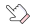

-
 1회기
1회기
왜 우리 아이에게
이런 일이 생겼을까요? -
2회기
학교폭력
대응방법 알기 -
 3회기
3회기
예방과 재발
방지하기 -
 4회기
4회기
부모는 무엇을 해야 할까요?
- 시작하기
- 첫째,
학교폭력 대응절차 - 둘째,
학교폭력 문제에
다르게 대처해보기 - 셋째,
자녀가 지켜야 할
학교생활 규칙 지도하기 - 정리하기
학교폭력 실태
학교폭력이 발생하면 학교폭력예방 및 대책에 관한 법률에 의하여
피해자보호, 학생징계, 분쟁조정 등의 조치가 학교 내에서 절차에 따라 진행됩니다.
이와는 별도로 「형법」, 「소년법」등에 의하여 각종 형사처벌 및 보호처분이 있을 수 있고,
「민법」에 의하여 물질적·정신적 손해에 대한 배상이 문제될 수 있습니다.
피해자보호, 학생징계, 분쟁조정 등의 조치가 학교 내에서 절차에 따라 진행됩니다.
이와는 별도로 「형법」, 「소년법」등에 의하여 각종 형사처벌 및 보호처분이 있을 수 있고,
「민법」에 의하여 물질적·정신적 손해에 대한 배상이 문제될 수 있습니다.
 학교폭력예방법 적용 (교내에서 처리)
학교폭력예방법 적용 (교내에서 처리)- 학교폭력예방 및 대책에 관한 법률로 피해자와 가해자 관련 학생이 다니고 있는 해당 학교폭력자치위원회에서 작용하는 법
- 경찰고소로 법적 처벌
-
소년법 만 10세~19세 미만에서 내리는 처벌로 최고 징역 2년 이하까지 처벌가능
소년부 재판에서 1호~10호 처분을 내리게 되는 것형사소송법 만 14세 이상인 자에게 적용
(단, 18세 미만인 자에게는 무기징역 또는 사형을 줄 수 없음) - 피해학생에 대한 보호조치(학교폭력예방법 제16조)
-
-
심리상담 및 조언

학교폭력으로 받은 정신적, 심리적 충격으로부터 회복할 수 있도록 하기 위해 학교 내의 전문상담교사나 학교폭력 관련기관의 전문가에게 심리상담 및 조언을 받도록 함.
-
일시보호
지속적인 학교폭력이나 보복의 우려가 있는 경우에 청소년쉼터, 피해학생 보호센터 등에서 일시적으로 보호를 받을 수 있도록 함.
-
치료·치료를 위한 요양
학교폭력으로 발생한 신체적, 정신적 피해를 치료하기 위해서 학교에 출석하지 않고 의료기관 등에서 치료를 받거나 요양할 수 있도록 함.
-
학급교체
지속적인 학교폭력의 불안감에서 벗어나도록 하기 위해서 피해학생을 동일 학교 내의 다른 학급으로 옮기도록 함.
-
그 밖에 피해학생 보호를
위하여 필요한 조치그 밖에 피해학생의 보호를 위해 필요한 조치피해학생의 보호를 위해 필요하다고 판단되는 조치를 실시함. 예) 등하교시 교사 또는 경찰의 보호동행, 학교폭력 관련 전문기관 등과 연계한 의료 법률 지원 등
-
피해학생에 대한 불이익 금지
(출석일수 산입, 성적평가 등)
-
심리상담 및 조언
- 상담, 보호, 요양비용 등의 청구
- 피해학생이 위의 심리상담 및 조언, 일시보호, 치료를 위한 요양 등에 소요된 비용은 가해학생의 보호자 부담
- 가해학생이나 보호자가 불분명하거나 부담능력이 없는 경우, 학교안전공제회, 혹은 시·도교육청이 먼저 비용을 부담할 수 있음
- 학교장 혹은 피해학생의 보호자는 공제급여를 학교안전공제회에 직접 청구할 수 있음.
- 학교폭력 문제해결 시 반드시 포함되어야 할 내용
- 가해학생의 재발 방지 및 보복 금지 각서
- 교사 입회하에 학급 등에서의 공개 사과